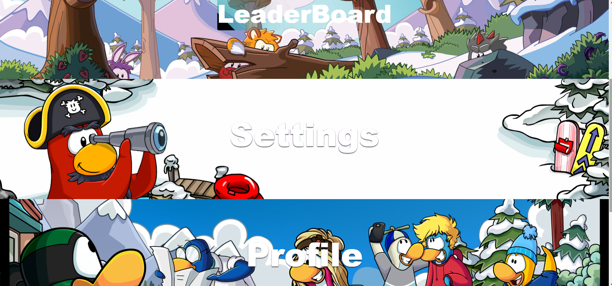
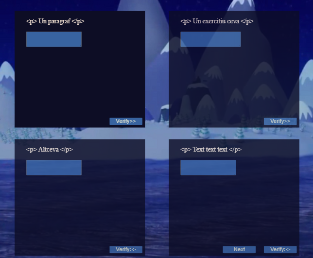
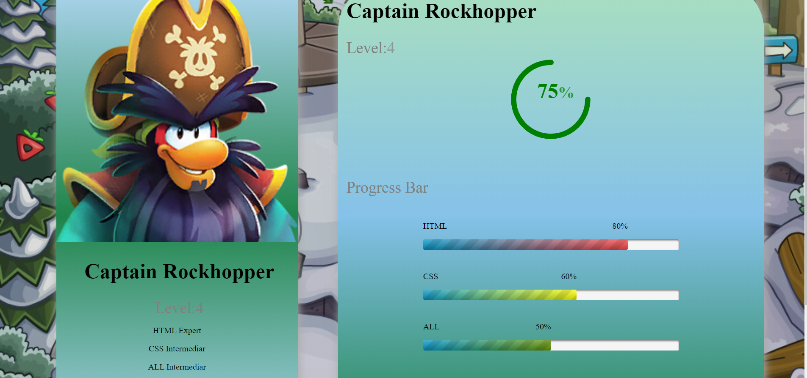
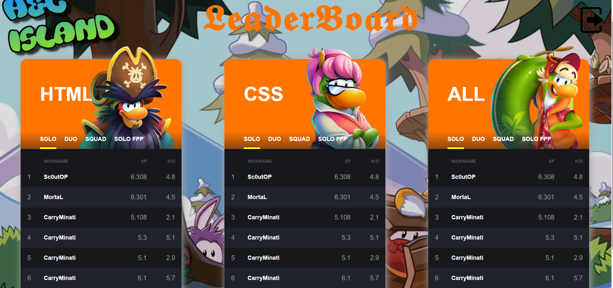

Proiectul LeHS are ca scop exersarea si verificarea cunostintelor despre Html si Css astfel incat
utilizatorul sa dobandeasca noi abilitati pentru scrierea de cod intr-o maniera interactiva,prin joc.
Front End
Paginile site-ului web sunt responsive iar tematica jocului este reprezentata de o insula locuita de
pinguini. Interfata este una atractiva si captivanta, functioanalitatile aplicatiei fiind usor de accesat si utilizat.
Sign Up & Login
Prima pagina a aplicatiei este "index.html" prin care utilizatorul poate accesa jocul fie prin logare fie
prin inregistrare. Sunt disponibile optiunile de conectare folosind conturile de github,google si facebook.
Navigarea intre sectiunile de logare respectiv inregistrare se realizeaza prin glisarea unui buton iar
butonul de sumbit al formularului de inregistrare necesita completarea tuturor campurilor cu date valide.
Printre functioanalitati se numara memorarea parolei si acceptarea termenilor si conditiilor pentru prelucrarea datelor personale.
Deasemenea de pe aceasta pagina utilizatorul are acces la galeria jocului.
Pentru a accesa formularul de register sau login se gliseaza un buton functionalitate obtinuta prin adaugarea de cod js paginii.
let x = document.getElementById("login");
let y = document.getElementById("register");
let z = document.getElementById("btn");
function register(){
x.style.left="-400px";
y.style.left="50px";
z.style.left="110px";
}
function login(){
x.style.left="50px";
y.style.left="450px";
z.style.left="0px";
}
Fig.1 -Formular de logare/ inregistrare
Game Gallery
Galeria jocului, identificata prin pagina "gallery.html", poate fi accesata de pe pagina principala si pune la dispozitie o serie de imagini
ilustrative pentru tematica jocului, creand o perspectiva de ansamblu asupra caracterelor ce vor insoti utilizatorul in experienta traita pe insula.
Utilizatorul poate deschide o imagine ce va fi dispusa pe intregul ecran si poate naviga intre imagini folosindu-se de cele doua butoane prev si next.
Fig.1 -Galeria jocului
Menu
Se pot selecta diverse pagini ale aplicatiei cum ar fi : selectarea nivelului de joc, vizualizarea unui
clasament, a profilului,setari respectiv inceperea/continuarea exercitiilor.
Pagina de meniu este realizata intr-o maniera unica,personalizata prin modul serial de dispunere al sectiunilor.

Fig.2 -Menu
Levels
Din meniu se ajunge pe pagina "levels.html" unde utilizatorul poate selecta o categorie pentru care opteaza sa-si
verifice cunostintele precum si un nivel de dificultate. Butoanele corespunzatoare categoriilor( Html sau Css ) au o forma circulara si contin
descrieri ale nivelelor. La trecerea mouse-ului peste buton se schimba background-ul iar optiunea de a incepe nivelul substituieste descrierea initiala.
Fiecare nivel are o tematica inspirate de locatiile insulei.
Fig.3 -Categorii
Beginner-HTML
Se propune jucatorului o serie de 4 exercitii. Un exercitiu efectuat corect il deblocheza pe urmatorul.
In cazul celui de-al 4 lea exercitiu devine disponibil nivelul urmator.
Un personaj/caracter acorda suport utilizatorului, oferindu-i enuntul sau indicii in rezolvare.
Legaturile catre paginile de selectare a nivelului, de vizitare a profilului si a meniului fac posibila
navigarea catre cele mai importante sectiuni ale aplicatiei.

Fig.3 -Begginer Html
Intermediate-HTML
Pagina este realizata intr-o maniera similara cu cea a celorlalte nivele dar tematica si caracterul
sunt personalizate in concordanta cu stadiul/etapa din joc.
Fig.4 -Intermediate Html
Advanced-HTML
Pagina este realizata intr-o maniera similara cu cea a celorlalte nivele dar tematica si caracterul
sunt personalizate in concordanta cu stadiul/etapa din joc.
Fig.5 -Advanced Html
Beginner-CSS
Se propun jucatorului o serie de 4 exercitii. Un exercitiu efectuat corect deblocheza urmatorul exercitiu.
In cazul celui de-al 4 lea exercitiu se deblocheaza nivelul urmator.
Fig.6 -Begginer Html
Intermediate-CSS
Se propun jucatorului o serie de 4 exercitii. Un exercitiu efectuat corect deblocheza urmatorul exercitiu.
In cazul celui de-al 4 lea exercitiu se deblocheaza nivelul urmator.
Fig.7 -Intermediate CSS
Advanced-CSS
Se propun jucatorului o serie de 4 exercitii. Un exercitiu efectuat corect deblocheza urmatorul exercitiu.
In cazul celui de-al 4 lea exercitiu se deblocheaza nivelul urmator.
Fig.8 -Advanced CSS
Profile
In aceasta pagina, utilizatorul isi poate vedea progresul corespunzator fiecarei categorii de exercitii (Html, Css, All),
nivelul curent si cat mai are de parcurs pana la urmatorul nivel. Este afisata si fotografia utilizatorului,
username-ul si optiunea de navigare catre pagina de cadouri/avantaje in joc pentru utilizator.

Fig.9 -Profile
Leader Board
In aceasta pagina, utilizatorul are acces la clasamentul utilizatorilor precum si locul pe care este situat raportat la ceilalti jucatori.
Topul jucatorilor este structurat in 3 sectiuni. Acestea din urma find in stransa legatura cu categoriile jocului( Html, Css, All).

Fig.10 -Leader Board
Settings
Setari cu privire la sunetul de fundal respectiv a suportului pentru internationalizare( limbile: engleza si franceza) pentru a putea fi accesat
pe o scara larga de utilizatori.
Fondul muzical are ca scop cresterea intesitatii si suspansului, mentinand interesul si atentia utilizatorului.
Pentru a accesa butonul de sound on/off s-a folosit cod js.
var nyan = document.getElementById('nyan');
var nyanBtn = document.getElementById('nyan-btn');
function playPause(song){
if (song.paused && song.currentTime >= 0 && !song.ended) {
song.play();
} else {
song.pause();
}
}
function reset(btn, song){
if(btn.classList.contains('playing')){
btn.classList.toggle('playing');
}
song.pause();
song.currentTime = 0;
}
function progress(btn, song){
setTimeout(function(){
var end = song.duration;
var current = song.currentTime;
var percent = current/(end/100); //check if song is at the end
Utilizatorul poate castiga, prin invartirea rotii, bonus de puncte, indicii la exercitii sau avantaje oferite de personajele
specifice fiecarui nivel. Aceasta functionalitate va fi disponibila o singura data pe zi.
Pentru a se accesa functionalitatea butonului spin s-a folosit cod js.